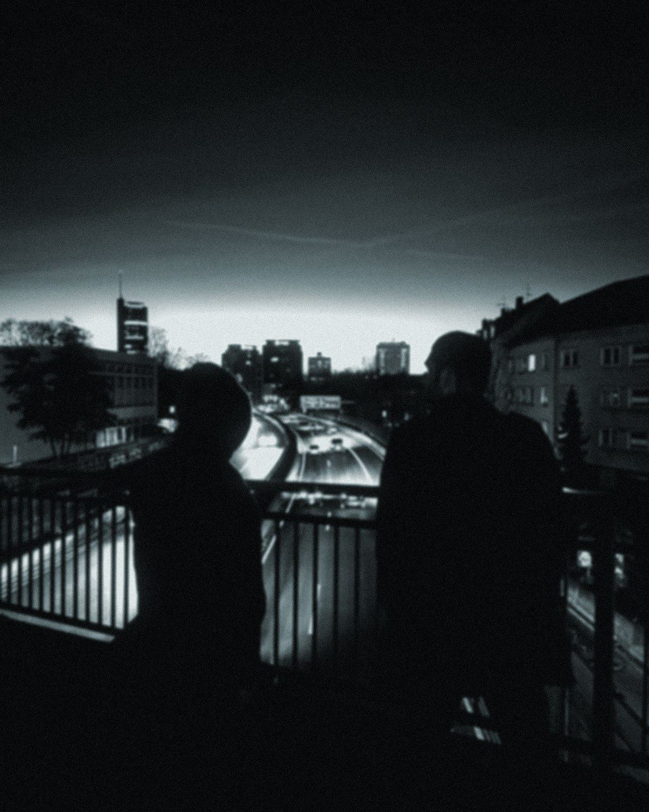

04 / Story
Two friends from Mülheim
Origin
Daniel Lyall and Maik Drozdzynski met at school. Inspired by York and Chicane, they founded Scot & Millfield in 1999 – first studio steps with the Bass Bumpers.
Sound
Melodic deep house, trance and chill-out with Balearic roots. Atmospheric, warm, built for the hour the sun goes down.
Reach
Releases on The Night Drive, Armada, Black Hole, Enhanced and Harthouse. Listeners from London to Mexico City and Sydney.
139K
Monthly listeners · Spotify